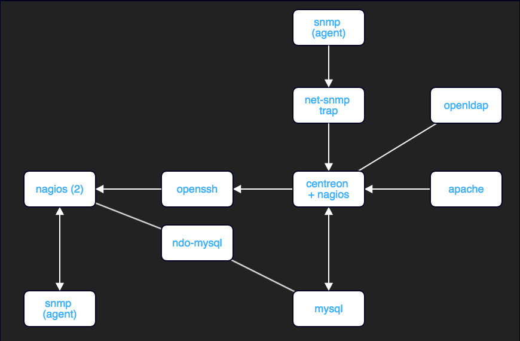
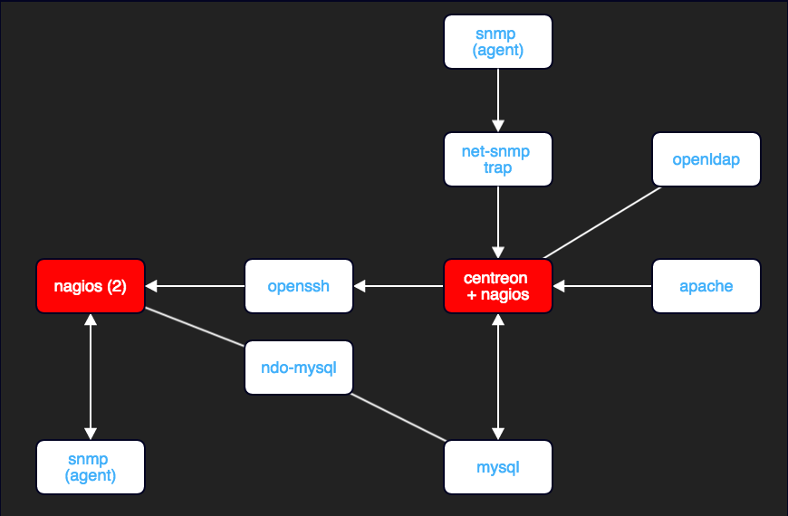

Monitoring
Sensu - the monitoring router
Léonard TAVAE / @leonardtavae
Vous avez un portable ou une tablette ?
http://bit.ly/sitle-monitoring
Architecture (NAGIOS)

Architecture (NAGIOS)

Démonstration
http://monitoring.srv.gov.pf
admin/supersecret